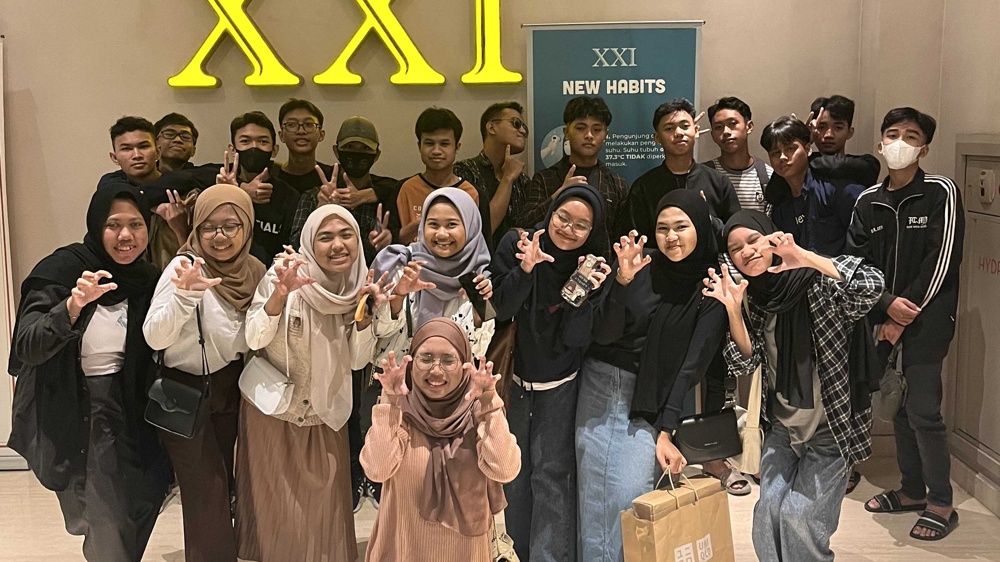

About Our Class
Expatearis adalah kelompok siswa IPA 2 dari tahun ajaran
2022-2025, yang dikenal karena karakteristik uniknya.
Dalam suasana belajar yang dinamis, setiap anggota kelas
menunjukkan jiwa kepemimpinan yang kuat, saling
mendukung dan mendorong satu sama lain untuk berkembang
secara maksimal. Kreativitas menjadi ciri khas mereka,
terlihat dari ide-ide inovatif dalam proyek dan tugas
yang selalu berhasil menarik perhatian. Selain itu,
humor yang menghiasi setiap interaksi di kelas
menjadikan suasana belajar semakin menyenangkan. Dengan
kombinasi kepemimpinan, kreativitas, dan selera humor
yang tinggi, kelas Expatearis tidak hanya menjadi tempat
untuk belajar ilmu pengetahuan, tetapi juga sebagai
wadah untuk mengembangkan karakter dan membangun
persahabatan yang erat di antara para siswa.
Independece Day
Hari Kemerdekaan Bangsa Indonesia adalah hari libur
nasional yang diperingati setiap tanggal 17 Agustus
untuk memperingati proklamasi kemerdekaan pada tahun
1945. Pada hari tersebut, warga Indonesia melaksanakan
upacara bendera sebagai bentuk penghormatan dan syukur
atas kemerdekaan. Di MA Bilingual Muslimat NU Sidoarjo,
seluruh siswa dan staf dewan guru melaksanakan upacara
di halaman sekolah. Petugas upacara dipilih dari siswa
dan siswi yang memiliki minat serta kualifikasi
tertentu.

Selain upacara, perayaan Hari Kemerdekaan juga
dimeriahkan dengan berbagai perlombaan khas Agustusan.
Perlombaan yang populer antara lain adalah Tarik
Tambang, Estafet, Makan Kerupuk, dan Balap Karung.
Kegiatan ini diselenggarakan oleh OSIS MABIMUSDA bagi
seluruh siswa dan siswi MA Bilingual mulai dari kelas 10
hingga kelas 12.
Event October
Bulan Oktober merupakan bulan yang penuh makna bagi
bangsa Indonesia dengan berbagai perayaan dan peringatan
penting. Setiap tanggal dalam bulan ini memiliki arti
tersendiri yang menggambarkan semangat kebangsaan dan
budaya Indonesia.
Hari Kesaktian Pancasila (1 Oktober)
Merupakan peringatan untuk mengenang peristiwa
G30S/PKI dan menguatkan nilai-nilai Pancasila
sebagai dasar negara. Hari ini menjadi momen
refleksi dan pemahaman lebih dalam tentang
pentingnya Pancasila dalam kehidupan berbangsa dan
bernegara.
Hari Batik (2 Oktober)

Ditetapkan sebagai hari untuk merayakan dan
melestarikan batik sebagai warisan budaya Indonesia.
Pada hari ini, masyarakat diimbau untuk menggunakan
pakaian batik sebagai bentuk penghargaan terhadap
keragaman dan keindahan seni batik.
Hari Santri Nasional (22 Oktober)

Dideklarasikan untuk menghormati peran para santri
dalam perjuangan kemerdekaan Indonesia. Hari ini
menjadi pengingat akan kontribusi pesantren dan
santri dalam mempertahankan nilai-nilai keagamaan
dan kebangsaan.
Sumpah Pemuda (28 Oktober)

Merupakan peringatan bersejarah ketika pemuda
Indonesia bersatu untuk menyatakan cita-cita bangsa.
Pada hari ini, diharapkan generasi muda dapat
melanjutkan semangat persatuan dan kesatuan demi
kemajuan bangsa.
Teacher's Day

Hari Guru di Indonesia diperingati setiap 25 November
sebagai bentuk penghormatan dan apresiasi kepada para
guru yang telah berkontribusi dalam mencerdaskan
kehidupan bangsa. Tanggal ini dipilih untuk memperingati
berdirinya Persatuan Guru Republik Indonesia (PGRI) pada
tahun 1945.
Peringatan ini memiliki makna yang dalam, yaitu untuk
menghormati jasa dan pengorbanan para guru dalam
mendidik generasi penerus, serta meningkatkan kesadaran
masyarakat akan pentingnya peran guru dalam sistem
pendidikan. Di berbagai sekolah, perayaan Hari Guru
biasanya diisi dengan berbagai kegiatan, seperti upacara
bendera, lomba, dan pertunjukan seni, di mana
siswa-siswa seringkali menyampaikan ucapan terima kasih
dan penghargaan kepada guru mereka. Dengan demikian,
Hari Guru bukan hanya sekadar perayaan, melainkan juga
momen refleksi untuk menghargai dan mendukung para guru,
sehingga kita semua dapat berkontribusi dalam
meningkatkan kualitas pendidikan di tanah air.
Basic Exercises Of Student Leadership

Latihan Dasar Kepemimpinan Siswa (LDKS) yang
diselenggarakan oleh OSIS MA Bilingual dan Pramuka MA
Bilingual merupakan kegiatan penting yang bertujuan
untuk membentuk karakter kepemimpinan dan keterampilan
di kalangan siswa. Kegiatan ini diadakan dengan
melibatkan berbagai materi pelatihan, mulai dari teori
kepemimpinan, kerja sama tim, hingga praktik lapangan
yang menarik.
Dalam LDKS ini, para peserta diajarkan untuk
mengembangkan kemampuan komunikasi, manajemen waktu, dan
mengambil keputusan yang baik. Selain itu, melalui
aktivitas outbound dan permainan yang menyenangkan,
siswa dapat mempererat hubungan antaranggota, serta
meningkatkan rasa solidaritas dan kebersamaan. Dengan
adanya LDKS ini, diharapkan siswa MA Bilingual dapat
menjadi pemimpin yang inspiratif dan memiliki jiwa
sosial yang tinggi, siap menghadapi tantangan di masa
depan.
Pondok Ramadhan

Pondok Ramadhan merupakan kegiatan yang diadakan selama
bulan Ramadhan sebagai wadah untuk memperdalam pemahaman
agama dan meningkatkan kualitas ibadah umat Muslim.
Kegiatan ini biasanya meliputi pengajian, tadarus
Al-Qur'an, serta diskusi mengenai berbagai tema
keagamaan yang relevan dengan kehidupan sehari-hari.
Selama Pondok Ramadhan, peserta diajak untuk lebih
mendalami nilai-nilai spiritual, mempererat tali
silaturahmi, dan berbagi pengalaman dalam menjalani
ibadah puasa. Selain itu, kegiatan ini juga seringkali
diisi dengan kegiatan sosial, seperti pemberian makanan
berbuka puasa kepada yang membutuhkan. Melalui Pondok
Ramadhan, diharapkan setiap individu dapat merasakan
kedamaian dan keberkahan bulan suci ini, serta
mengoptimalkan amal ibadah mereka untuk mencapai derajat
yang lebih baik di sisi Allah SWT.
Perjusa
Perjusa (Perkemahan Jum'at-Sabtu) dan pelantikan Penegak
Bantara yang diadakan oleh Pramuka MA Bilingual
merupakan momentum penting dalam proses pembentukan
karakter dan kepemimpinan para anggota pramuka. Kegiatan
ini dilaksanakan dengan berbagai rangkaian acara,
seperti pelatihan keterampilan, permainan edukatif, dan
pengembangan diri yang dirancang untuk meningkatkan rasa
tanggung jawab serta kerja sama di antara anggota. Pada
saat pelantikan, para peserta yang berhasil
menyelesaikan semua rangkaian kegiatan akan diresmikan
sebagai Penegak Bantara, menandakan bahwa mereka telah
siap untuk mengambil peran yang lebih aktif dalam
organisasi pramuka dan masyarakat. Melalui kegiatan ini,
diharapkan para anggota pramuka dapat menjadi generasi
yang memiliki jiwa kepemimpinan, disiplin, serta mampu
berkontribusi positif bagi lingkungan sekitarnya.
Buka Bersama

Buka bersama yang diselenggarakan oleh Expatearis dalam
lingkup kelas IPA 2 dan wali kelas merupakan momen
berharga untuk mempererat tali silaturahmi di antara
siswa dan guru. Kegiatan ini diadakan menjelang waktu
berbuka puasa, di mana seluruh siswa berkumpul untuk
menikmati hidangan yang telah disiapkan bersama. Selain
berbagi makanan, acara ini juga diisi dengan berbagai
aktivitas, seperti tausiyah singkat dari wali kelas yang
memberikan motivasi dan pesan-pesan positif selama bulan
suci Ramadhan. Suasana kebersamaan dan kehangatan dalam
buka bersama ini diharapkan dapat memperkuat hubungan
antar siswa dan wali kelas, serta menciptakan lingkungan
belajar yang lebih harmonis dan saling mendukung. Dengan
demikian, kegiatan ini tidak hanya sekadar berbuka
puasa, tetapi juga sebagai wadah untuk membangun
solidaritas dan rasa kepedulian di antara anggota kelas.
Resensi Film

Expatearis sedang melakukan resensi film berjudul
"Menjelang Ajal," sebuah karya yang mengangkat tema
kehidupan dan kematian dengan pendekatan yang sangat
emosional. Dalam film ini, penonton diajak untuk
menyelami perjalanan hidup tokoh utama yang menghadapi
kenyataan pahit saat mendekati akhir hayatnya. Resensi
yang dilakukan oleh Expatearis mencakup analisis
mendalam terhadap alur cerita, karakter, serta pesan
moral yang ingin disampaikan. Mereka memberikan ulasan
tentang akting para pemeran yang sangat mengesankan,
serta sinematografi yang mampu menangkap emosi secara
visual. Melalui resensi ini, Expatearis berharap dapat
memberikan wawasan kepada penonton mengenai makna di
balik film tersebut, serta mendorong diskusi mengenai
tema kehidupan yang sering diabaikan. Kegiatan ini tidak
hanya meningkatkan pemahaman terhadap seni film, tetapi
juga mengajak semua orang untuk merenungkan makna
kehidupan dan pentingnya menghargai setiap momen yang
ada.
Pariwisata

Kelas IPA 2 dari Expatearis memutuskan untuk mengisi
liburan setelah ujian akhir tahun dengan melakukan
perjalanan ke Gunung Bromo. Kegiatan ini menjadi momen
yang sangat dinantikan oleh siswa-siswa setelah melewati
masa ujian yang melelahkan. Dalam perjalanan ini, mereka
tidak hanya menikmati keindahan alam yang menakjubkan,
seperti pemandangan matahari terbit yang spektakuler dan
lautan pasir yang luas, tetapi juga mempererat hubungan
antar teman. Selama di Bromo, siswa-siswa melakukan
berbagai aktivitas menyenangkan, seperti trekking,
berfoto, dan belajar tentang ekosistem serta budaya
lokal. Momen liburan ini menjadi pengalaman berharga
yang tidak hanya menyegarkan pikiran, tetapi juga
menambah wawasan dan pengetahuan mereka tentang
keindahan alam Indonesia. Dengan semangat kebersamaan,
perjalanan ini menjadi kenangan yang tak terlupakan bagi
seluruh anggota kelas.